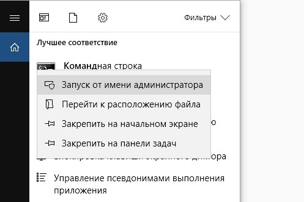
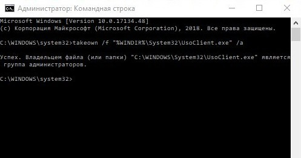
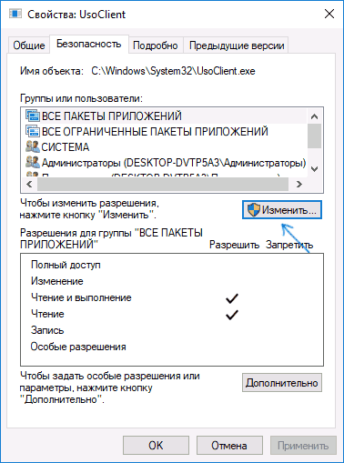
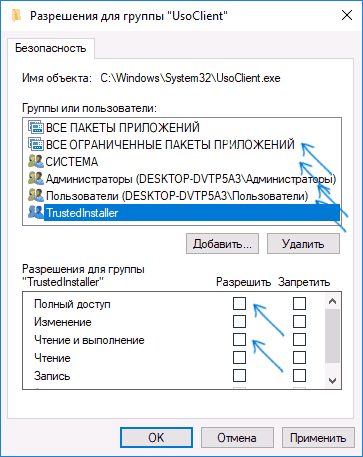

Как отключить автоматическую установку обновлений в Windows 10 LTSC Enterprise

Бесят постоянные обновления «десятки», которая забивает все свободное место на жестком диске? Мы расскажем, как можно гарантированно отключить автообновление Windows 10:
Шаг 1
В глобальном поиске Windows вводим Командная строка или cmd. Система предложит вам запустить классическое приложение Командная строка. Не спешите, сначала нажмите на названии правую кнопку мыши и выберите дополнительный параметр Запуск от имени администратора.
Шаг 2
Подтвердите свои действия, разрешив этому приложению вносить изменения на данном компьютере.
Шаг 3
В открывшемся окне введите (просто скопируйте текст и вставьте в командную строку)
takeown /f "%WINDIR%\System32\UsoClient.exe" /a
Это нужно для того, чтобы привязать файл UsoClient.exe к группе администраторов и дать вам полный контроль над ним.

Шаг 5
На вкладке «Безопасность» нажмите кнопку «Изменить».

Шаг 7
Поочередно выберите каждый пункт в списке «Группы или пользователи» и снимите для них все отметки в столбце «Разрешить» ниже

Шаг 8
Нажмите Ок и подтвердите изменение разрешений
Шаг 9
Перезагрузите компьютер.